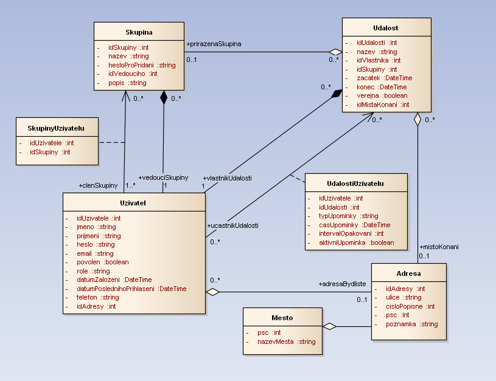

1. Obrázek s modelem (E-R diagram)
musí obsahovat minimálně 4 entity, lze použít model z vlastních předchozích semestrálních prací apod. Doporučena jsou originální zadání (nikoliv různé knihovny, databáze CD/DVD, autobazary, apod.)
2. Slovní popis dodatečných integritních omezení
2.1 Triviální omezení
- Konec události musí být později než její začátek
- Skupina musí mít ID vedoucího
- Skupinové heslo musí mít alespoň 3 znaky
- Uživatelské heslo musí mít alespoň 5 znaků
2.2 Netriviální omezení
- Pripominka/Udalost - upomínka nemůže být později než je začátek události
- Skupina nebude mít více jak 150 členů
3. Návrh API rozhraní „business logiky“ pro dva procesy
Procedura: nastavUpo
Parametry: idUdalosti, predstih, opakovani
Popis: Nastaví upomínky všem uživatelům, kteří sdílí danou událost v daném předstihu od začátku události a daný interval opakování od první upomínky.
Procedura: zjistiDostupnost
Parametry: idSkupiny, zacatek, konec
Popis: Vyhledá počet konfliktů (počet existujících událostí) v dané skupině uživatelů na základě zadaného časového intervalu.
4. Návrh pěti slovně formulovaných dotazů nad schématem
- Určí počet událostí v dané skupině uživatelé a daném časovém rozsahu
- Vypočte průměrný počet přípomínek uživatelů.
- Určí počet připomínek na danou událost
- Vyhledá 4 nejblížší události pro daného uživatele
- Pro každé město vypíše počet události, které se tam konaly
5. Skript, který vytvoří databázové schéma odpovídající E-R diagramu
5_schema.sql6. Skript, který vytvoří v databázovém schématu dodatečná integritní omezení
6_constraints.sql
7. Skript, který naplní tabulky testovacími daty
8. Skript (včetně výstupu spool), který provede postupně všechny navržené dotazy (viz výše), optimalizace dvou složítějších dotazů
8_queries.sql
8_opt.txt
8_opt2.txt
9. Skript, který se pokusí porušit postupně všechna dodatečná integritní omezení + výstup spool z provádění tohoto skriptu (budou vidět chyby při porušení I.O.)
10. Skript pro vytvoření balíku (package) a procedur „business logiky“ (viz výše)
11. Testovací skript (včetně výstupu spool obdrženého po spuštění) pro obě procedury, včetně souvisejících dotazů, které ověří, že každá procedura provedla to co měla
12. Skript, který doplní do zvolené tabulky schématu sloupec, který bude obsahovat odvozené hodnoty (průměrný plat zaměstnance v rámci oddělní apod.) – tyto hodnoty budou automaticky aktualizovány pomocí triggerů
13. Skript, který vytvoří úložiště ještě jednou v „objektové“ podobě
13_object_schema.sql
14. Skript, který provede navržených pět dotazů znovu, tentokrát nad objektovými tabulkami
15. Navrhněte slovně fakta a dimenze pro datový sklad vycházející z vaší databáze.
Tabulky dimenzí:
- Misto - např. v jakém městě, kraji nebo zemi bývá nejvyšší účast
- Uzivatel - pro zjištění např. čí události jsou nejpopulárnější
- Cas - rozdělení podle času (dny, týdny, měsíce, ...)
- Udalost - kvůli faktu, že v jeden čas může být na jednom místě více událostí, navíc umožní filtrovat např. na základě názvu konkrétní každoroční události a sledovat jak se každý rok mění účast
- idAdresy (FK na dimenzi Misto)
- idVlastnika (FK na dimenzi Uzivatel)
- zacatekUdalosti (FK na dimenzi Cas)
- idUdalosti (FK na dimenzi Udalost)
- ucast (NUMBER)
Míra: Počet zúčastněných osob